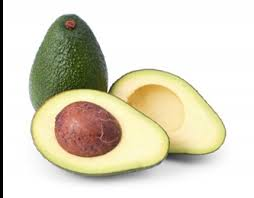
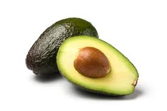
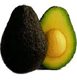
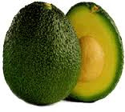
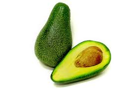
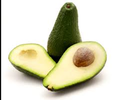
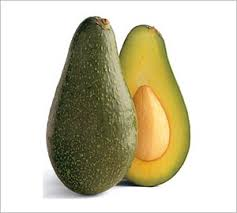
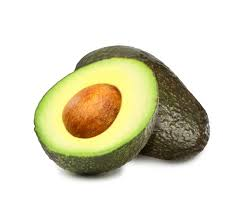

|  |
Bacon is a medium sized fruit with a smooth and a yellowish green skin. Bacon has a light tasting flesh. It is a good pollinator for Hass. |
|  |
Hass is the common variety of California Avocado. Hass productions are famous in Southern California regions. The color of its skin changes from green to purplish-black when it is ripe. |
|  |
Lamb has smooth texture, with buttery flavor. Color of the flesh and seed ratio is similar to Hassexcept the black colored skin which is slightly darker than Hass. |
|  |
Gwen haves similar taste, texture and appearance of Hass, but slightly larger in size. Harvesting time is generally from January to September in southern California. |
|  |
A hybrid Mexican variety which is the original high quality California Avocado. Harvesting time is generally from November to March. |
|  |
Relatively longer neck when compared with other avocadoes. Its flesh has a nutty taste. The skin is medium thick which is similar to Hass. |
|  |
Zutano has a good flavor with a greenish skin. Harvesting time for Zutano is generally from September and is available through early winter. |
|  |
Large, round fruit which is similar to the shape of a lemon. Reed varieties are available during summer season and early fall. |